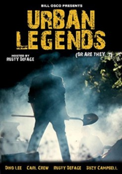

Urban Legends (1998)


País:Estados Unidos,
Idiomas:
GénerosTerror
Director/es:Bill Osco
Guionistas:
Códec de vídeo:Unknown
Número: 1222
TomatoMeter:

--

--
Clasificación IMDb:


4.8/10 (6 votos)
Certificación:
Argumento:
Talk show host Rusty Defage introduces a series of short pieces that relate urban legends from around America in this anthology film.
Reparto
Dino Lee (Como Rusty De Fage / Dr. Chip Slitson / Joe Bardo), Diane M. Nelson, Carl Crew, Bob Blaine
Medio: Archivo de video,
Localización: D:\PELICULAS\ACTORES\Jared Leto\Urban Legend [1998] [720p] [1,49 Gb]\Urban Legend [1998] [720p].mp4
Prestado: No
Rel. aspecto: Unknown